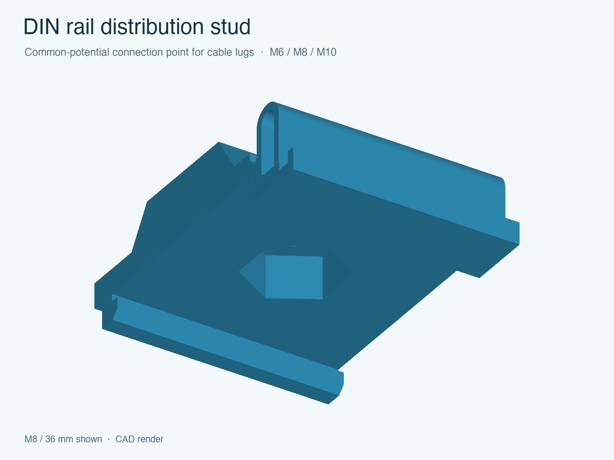

DIN rail · Electrical projects
DIN rail distribution stud
A common-potential connection point for cable lugs, for example in Victron Energy systems. Choose the bolt size, holder width and rail fit.
Dimensions & printing guidePrintable parts with browser configurators. Adjust the dimensions, preview your model, and download the files.

A common-potential connection point for cable lugs, for example in Victron Energy systems. Choose the bolt size, holder width and rail fit.
Dimensions & printing guide